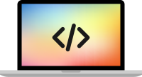
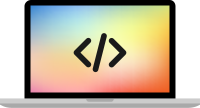

Hi, I'm Kevin and I'm passionate about technology. Raised in the Silicon Valley and earning my EECS degree at UC Berkeley, I've spent a large portion of my time building cool projects that push the boundaries of what I've learnt at school. I believe that the key to success is not only having a strong grasp of the fundamentals in a variety of areas, but also being able to have the initiative to go out into the world and make things happen. I'm looking forward to taking the skills that I've honed and repurposing them to create amazing products that will make people's lives that much more exciting.
Timeline
Even though I have spent a lot of time at school, I have had more experiences beyond taking tests. Check out some of my most interesting projects on the left!